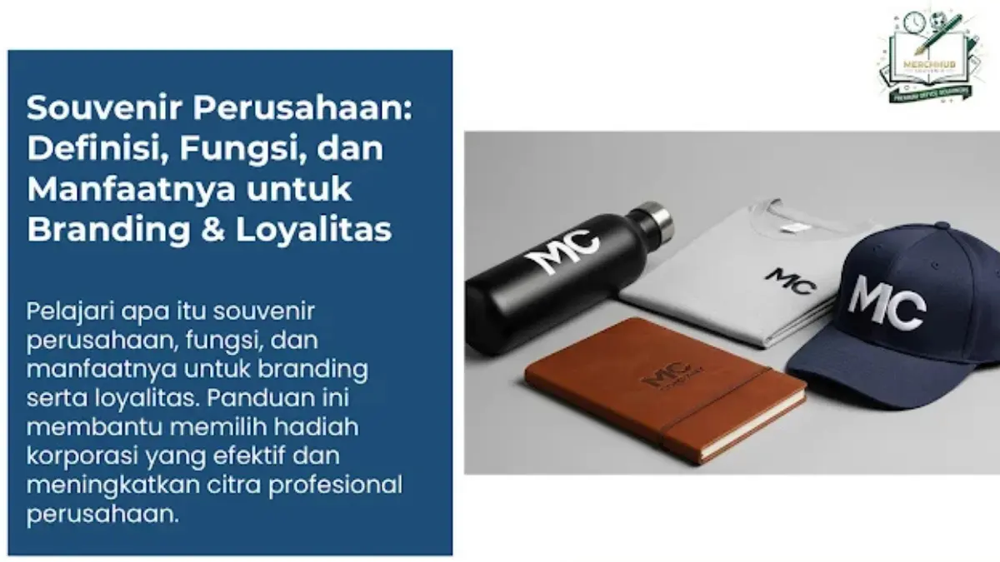

Corporate Gifts ID - Souvenir perusahaan adalah hadiah bermerek yang diberikan kepada klien, karyawan, atau mitra bisnis untuk memperkuat brand awareness, membangun loyalitas, dan meningkatkan citra profesional di mata stakeholder. Selain menjadi tanda apresiasi yang tulus, souvenir perusahaan juga berfungsi sebagai media promosi tidak langsung karena logo dan identitas brand terus terlihat setiap kali produk tersebut digunakan oleh penerimanya.
Dalam iklim kompetisi bisnis modern, perhatian terhadap detail kecil sering kali menjadi pembeda yang signifikan. Pemberian souvenir kantor tidak hanya bernilai simbolis, melainkan memiliki dampak strategis yang terukur terhadap penguatan hubungan kemitraan jangka panjang.
Poin Kunci Keunggulan Souvenir Perusahaan:
- Diferensiasi Kompetitif: Menegaskan positioning dan standar kualitas profesional institusi Anda di hadapan kompetitor.
- Promosi Pasif Organik: Memberikan impresi visual berulang tanpa beban biaya iklan berkala.
- Retensi Kemitraan: Menciptakan ikatan emosional resiprositas yang memperkokoh loyalitas mitra dan klien B2B.
- Motivasi Internal: Meningkatkan rasa bangga, keterlibatan (engagement), dan loyalitas karyawan terhadap korporasi.
Apa Itu Souvenir Perusahaan?
Souvenir perusahaan atau Corporate Gifts adalah cinderamata yang dirancang khusus oleh sebuah perusahaan untuk diberikan kepada pihak-pihak strategis, seperti klien VIP, mitra bisnis, karyawan, maupun tamu kehormatan. Souvenir ini biasanya disematkan identitas visual seperti logo, warna korporat, atau pesan khusus sehingga setiap kali digunakan akan mengingatkan penerima pada reputasi positif perusahaan pemberinya.
Souvenir perusahaan umumnya dibagikan pada berbagai momentum formal dan informal, di antaranya:
- Perayaan hari jadi atau anniversary perusahaan
- Peluncuran produk baru dan ekspansi bisnis
- Event pameran, simposium, dan expo industri
- Program gathering karyawan, workshop, atau konferensi
- Apresiasi masa kerja karyawan dan penghargaan mitra strategis
Fungsi Souvenir Perusahaan dalam Strategi Bisnis
Pemberian merchandise korporat memiliki fungsi yang jauh lebih luas daripada sekadar bingkisan seremonial. Berikut adalah empat pilar fungsinya dalam strategi bisnis kontemporer:
1. Meningkatkan Citra dan Profesionalisme Perusahaan
Souvenir bermutu tinggi memberikan impresi nyata bahwa perusahaan sangat menghargai kualitas dan menjunjung tinggi standar keunggulan. Pemilihan material yang solid dan kemasan yang rapi secara langsung merefleksikan kredibilitas manajemen Anda.

Kombinasi tumbler custom, notebook kulit, dan apparel berlogo perusahaan yang selaras dan fungsional.
2. Memperkuat Brand Awareness Berkelanjutan
Setiap kali produk digunakan dalam aktivitas sehari-hari, brand perusahaan mendapatkan ruang eksposur alami. Barang fungsional seperti tumbler stainless, tas kerja, atau flashdisk membuat logo Anda tampil secara konsisten di meja kantor, ruang rapat, maupun perjalanan bisnis.
3. Membangun Loyalitas dan Kepercayaan Stakeholder
Penerima merasa diprioritaskan ketika menerima hadiah yang relevan dan bernilai guna tinggi. Rasa dihargai ini menumbuhkan ikatan emosional mendalam yang menjaga keberlanjutan hubungan kemitraan bisnis.
4. Mendukung Strategi Pemasaran Tidak Langsung (Passive Marketing)
Souvenir yang praktis dan berdesain estetis sering kali digunakan di hadapan rekan kerja, keluarga, atau relasi bisnis lainnya. Hal ini memicu percakapan positif dan memperluas jangkauan reputasi merek Anda secara organik.
Apa Manfaat Souvenir Perusahaan bagi Setiap Stakeholder?
Manfaat cinderamata korporat dirasakan secara luas oleh berbagai pihak yang berinteraksi dengan perusahaan Anda:
Tabel Manfaat Langsung Souvenir Perusahaan per Stakeholder
Berikut adalah rincian manfaat langsung yang dirasakan oleh masing-masing kelompok pemangku kepentingan:
| Pihak Penerima | Manfaat Langsung | Dampak Jangka Panjang bagi Perusahaan |
|---|---|---|
| Klien & Mitra Bisnis | Merasa dihargai, mempererat komunikasi, dan meningkatkan rasa percaya. | Peningkatan retensi kontrak, kerja sama berkelanjutan, dan peluang repeat order. |
| Karyawan Internal | Meningkatkan motivasi kerja, rasa memiliki (sense of belonging), dan moral tim. | Menurunkan angka turnover karyawan serta meningkatkan produktivitas operasional. |
| Calon Klien Prospektif | Mendapatkan kesan awal (first impression) positif dan mengingat brand lebih cepat. | Memudahkan proses negosiasi awal dan mempercepat konversi prospek menjadi klien. |
| Masyarakat & Tamu Acara | Menerima item fungsional yang mendukung produktivitas aktivitas harian. | Membangun citra positif korporasi (CSR) dan memperluas brand awareness publik. |
Tren Souvenir Perusahaan Terkini di 2026
Pergeseran tren cinderamata bisnis bergerak menuju produk yang lebih bernilai guna, ramah lingkungan, dan relevan secara teknologi:
- Produk Ramah Lingkungan (Eco-Friendly): Tote bag kanvas daur ulang, tumbler bambu stainless, dan cutlery set kayu mendukung kampanye keberlanjutan ESG.
- Gadget & Aksesoris Teknologi Cerdas: Wireless fast charger, powerbank slim, dan smart LED tumbler mencerminkan identitas perusahaan yang modern dan adaptif.
- Executive Gift Set Eksklusif: Kemasan rigid box berpita dengan kombinasi pulpen metal grafir laser dan agenda kulit deboss untuk relasi VIP.
- Personalisasi Nama Individual: Grafir nama personal penerima pada setiap produk melipatgandakan apresiasi emosional.
Bagaimana Cara Memulai Strategi Souvenir Perusahaan yang Efektif?
Agar anggaran pengadaan souvenir memberikan hasil optimal bagi reputasi bisnis:
- Pahami Profil Audiens: Sesuaikan pilihan barang dengan profesi, usia, dan kebutuhan harian penerima.
- Utamakan Kualitas Material: Hindari produk murah yang cepat rusak karena dapat merusak persepsi mutu perusahaan.
- Jaga Konsistensi Identitas Visual: Pastikan proporsi logo, palet warna, dan tagline tertera presisi dan tidak berlebihan.
- Tentukan Waktu Pembagian yang Tepat: Bagikan pada momen perayaan spesial untuk menciptakan kenangan yang membekas.
- Pilih Vendor Terpercaya: Pastikan mitra vendor memiliki legalitas resmi, garansi mutu, dan ketepatan waktu pengiriman.
Kesimpulan dan Solusi Pengadaan
Souvenir perusahaan bukan sekadar pengeluaran biaya (cost), melainkan investasi strategis ber-ROI tinggi dalam membangun citra brand, memperkuat loyalitas klien, dan meningkatkan kebanggaan tim internal. Dengan pemilihan produk yang berkualitas dan relevan, cinderamata ini menjadi representasi keunggulan institusi Anda di setiap kesempatan.
Siap menyusun paket souvenir perusahaan yang berkelas untuk agenda bisnis Anda? Konsultasikan kebutuhan Anda bersama tim Corporate Gifts ID untuk mendapatkan penawaran harga grosir terbaik dan sampel mockup gratis.